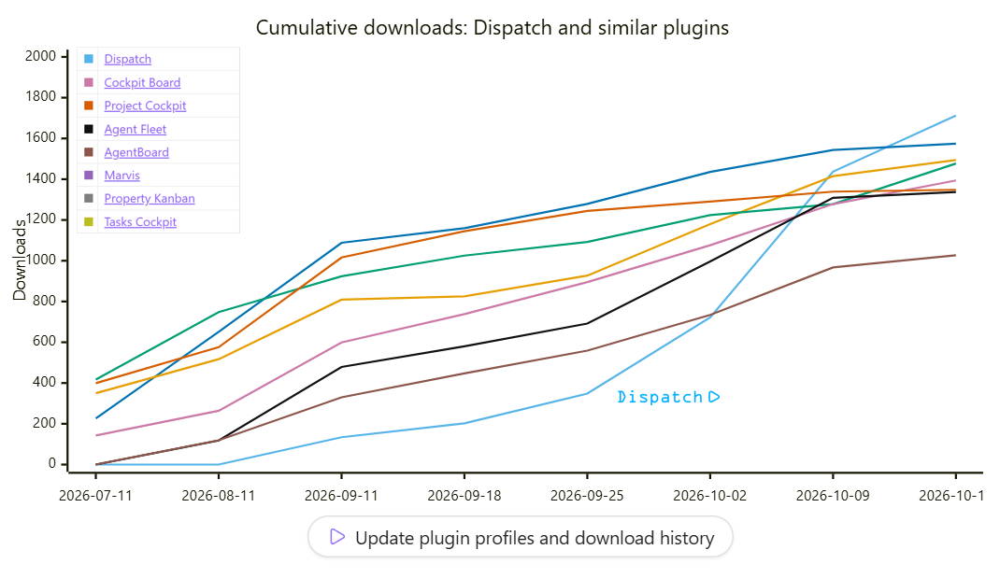

6 reasons why you need a wiki for your LLM
What would you send an alien pen pal on Proxima Centauri 4 light years away to explain humanity?

Imagine you have an alien pen pal on Proxima Centauri 4 light years away, and they ask you to send them one URL to learn all about humanity. What would you send them? I guess you would send them Wikipedia, because most of our knowledge is collected there in a way that is fairly easy to understand. It’s not all our knowledge, but it is the best possible start. The LLM Wiki1 idea of Andrej Karpathy is the same thing for your software project, and the alien is the LLM.
The original gist of Andrej Karpathy2 hardly mentions how to use an LLM Wiki in a team. I would argue that the LLM Wiki is especially well suited to teams, for these 6 reasons.
I'm writing from experience: our team built Elternkraft on an LLM Wiki, and the process we developed along the way became Dispatch, a free, open-source board for Obsidian3 that gives a team its workflow around the wiki.
1. A shared knowledge base#
The LLM can only make the right decisions if it has the right context.4 If every team member works on their own, the LLM will store the generated documents and memories in local folders. Only one user can benefit from this knowledge. If these documents are shared through the LLM Wiki, every member and every LLM can benefit from them. It gives the entire team the ability to define the goals, the means and the things to avoid, so the LLM can derive its conclusions from them.
Examples:
- With legal documents like the terms of use and the privacy declaration in the wiki, the LLM can warn you if a new feature violates them. It can also suggest changes to these documents to enable these features.
- An industry news report can warn you about upcoming regulatory obligations and suggest creating a new ticket for it or putting that topic on the agenda of the next weekly sync.
- Decisions made in meetings can have effects on upcoming tickets.
2. Accelerate product and project management#
Developers use Git5 to synchronize the code between workstations, test and production environments. The LLM Wiki can do the same for product and project managers when they must sync information between tickets, emails, Slack, meetings, documents and presentations.
Examples:
- Update tickets with decisions made in a meeting
- Distribute meeting notes via email and Slack
- Nudge stakeholders on urgent open questions on Slack to advance with a ticket
- Update the estimation for MVP6 readiness based on completed and new tickets
3. Create workflows without coding#
Skills for Claude Code or Codex7 are just Markdown files, like the pages in the wiki. You can define a new workflow or skill by writing all steps on a wiki page and then pointing your LLM to this page. You don't share only the content but also the workflow with the team.
You can leave instructions for the LLM in the document itself. For example, you can add the resources and the prompt8 you used to create the document in a paragraph of the document, and then just ask the LLM to update the document. There is even a way to inline a prompt and attach it to a button, so you don't even need to type.9

Examples:
- The screenshot above shows a wiki page with a Mermaid10 graph of the downloads of Obsidian plugins similar to Dispatch. The button below the graph runs a prompt that updates it from the live sources.
- Add an inline prompt to the end of the Open Questions paragraph: Guide me through all open questions of this ticket. You can then discuss each question with the LLM one by one.
- Manually going through tests in a test plan is often a very tedious task. With the same guide-me technique the LLM will generate test data for each test and you will rush through the test plan.
4. The LLM will maintain the wiki for you#
You might think it’s tedious to maintain a wiki, and you might know a lot of outdated corporate wikis which contain so much stale documentation that reading them is a waste of time. That may have been true in the past, but you will rarely update the pages yourself – the LLM will do that for you.
The LLM is the perfect bureaucrat for this job.
Examples:
- You won’t write the tickets yourself. Just give the /create-ticket skill a few lines of context and it will write the rest for you. No more clerical Scrum11 work.
- Inconsistencies, outdated pages and unlinked references can be fixed by the LLM.
5. The LLM Wiki is fast#
A common approach is to add context to the LLM using MCP servers. MCP stands for Model Context Protocol,12 and there are MCP servers for almost all ticket systems like Asana or Jira. The catch with MCP is that it's slow compared to a file read or a file write. If you have multiple MCP servers for different sources, your LLM must know which one to use for which information, or it might miss some important information and it can even bloat your context window.13 Jediah Katz of Cursor wrote recently about this.
The LLM Wiki is simple in this regard. Its premise is that all information is stored locally on your hard drive, and the LLM only has to follow the links or do a full-text search with the Obsidian CLI.14 With the LLM Wiki approach you would rather download and upload tickets and wiki pages than look them up every time you need them.
Examples:
- MCP is for syncing the wiki with tickets, local files are for reading and writing for the LLM
- Keep a copy of your website in the form of Markdown files in your wiki
- Sync your GitHub issues and pages with the GitHub CLI
6. The LLM Wiki works best for remote teams#
Remote is still the standard in most software development teams. That’s good for our LLM colleagues. If every interaction between team members is digital (Slack, email or meetings), an LLM can access the data and use it. This is not so easy for on-site teams. There is a lot of communication across the desk and in meeting rooms. The agent15 can't access these channels and is always lagging behind. You can record on-site meetings, but it will be hard to assign the right speaker to each part of the transcript.
The best interface for humans and alien LLMs#
My conclusion is that a wiki is the best way to store knowledge about your project and your team and make it available for an alien LLM. Otherwise your alien friend would only know what you have typed in the small input field at the bottom of your chat window.
At the beginning, building it up takes extra effort, but as you keep working on it you can hand over more and more of your daily tasks to the LLM.
What is missing?#
The code repository is one part, and the wiki is the other. But how do you glue these two parts together? One answer to this question is skills or commands, which usually reside in the .claude/commands or .codex/skills folder. These skills are for planning, developing or reviewing the code, and they must be aware of the wiki and know when to read or write it. The other answer is Dispatch, which gives users the right process and UI to manage the development process and update the wiki. The prepared skills also rely on a common directory structure which is optimized for the workflow.
If you want to dive deeper, I recommend reading Dispatch 101, which describes this in detail, or ask me to give you and your team a short introduction to Dispatch. DM me on LinkedIn or email me for the free starter package which includes a 30-minute introduction, help with the initial setup, support via Slack and a review after 6 weeks.
Kai Mysliwiec
Further reading:
- Dispatch 101 for a technical introduction
- Elternkraft - the origins of Dispatch, a customer success story
-
An LLM Wiki is a collection of linked notes that an AI reads and keeps up to date. ↩
-
A gist is a short text or piece of code shared on GitHub. ↩
-
Obsidian is a free Markdown editor that turns a folder of notes on your computer into a linked wiki. ↩
-
Context is the background the AI needs to answer well, such as your notes or earlier decisions. ↩
-
Git is the tool developers use to track changes to code and combine the work of several people. ↩
-
An MVP (minimum viable product) is the smallest version of a product that is worth releasing to real users. ↩
-
Claude Code and Codex are AI coding assistants by Anthropic and OpenAI. A skill is a written set of instructions that teaches them a workflow. ↩
-
A prompt is the request you type to the AI. ↩
-
An inline prompt is an instruction to the AI written into the wiki page itself, such as "List this week's meetings here". The AI follows it whenever it updates the page. ↩
-
Mermaid draws diagrams and charts from a few lines of text inside a Markdown page. ↩
-
Scrum is a popular way of organizing software teams in short work cycles called sprints. ↩
-
MCP is a standard way to connect an AI to other services, such as your ticket system. ↩
-
The context window is the amount of text an AI can take into account at once. What fills it up leaves less room for your actual task. ↩
-
A CLI (command-line interface) is a way to control a program by typing commands instead of clicking. ↩
-
An agent is an AI that carries out tasks on its own, such as editing files or running commands. ↩